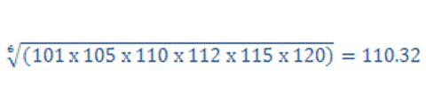
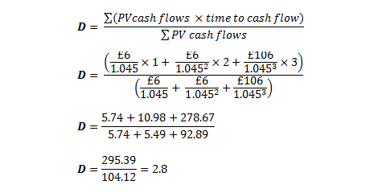
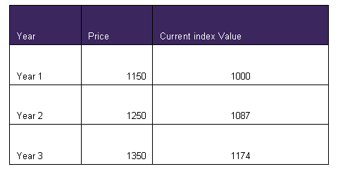
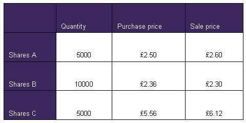

Competency Test (Random Difficulty Questions)
Question 1
[1067813]
Calculate the geometric mean of the below index values:
101, 105, 110, 112, 115, 120
A
110.5
B
110.3
C
110.7
D
110
The correct answer is: B - 110.3
Explanation
In general it is the nth root of all the values multiplied, where n is the number of values given.
Question 2
[1069543]
What percentage of its Net Asset Value (NAV) can a UCITS fund invest in unlisted securities?
A
5%
B
10%
C
20%
D
None
The correct answer is: B - 10%
Explanation
A UCITS fund can invest up to 10% of its NAV in non-approved (e.g. unlisted) securities.Question 3
[1067822]
According to the International accounting standards, which of the below would be recorded at cost on the balance sheet (as opposed to fair value)?
A
Quoted ordinary share
B
Quoted Preference share
C
Unquoted share
D
Corporate bond
The correct answer is: C - Unquoted share
Explanation
The measurement method depends on classification and whether fair value can be reliably determined.Question 4
[1069540]
On which of the following exchanges would energy futures be traded?
A
LME
B
LSE
C
NYMEX
D
NYSE.Liffe
The correct answer is: C - NYMEX
Explanation
Energy futures are traded on NYMEX (New York Mercantile Exchange) and also on ICE (Intercontinental Exchange).Question 5
[1067820]
According to UK GAAP and International accounting standards, how should the inventory be valued on the balance sheet?
A
LIFO
B
At cost
C
Net realisable value
D
Lower of cost and net realisable value
The correct answer is: D - Lower of cost and net realisable value
Explanation
The net realisable value is the estimated sale proceeds of the inventory less any costs still to be incurred in selling the inventory. These additional costs include any further finishing costs and costs incurred in marketing, selling and distribution. If the net realisable value of closing inventory is lower than its cost, then the closing inventory value should be written down to net realisable value.Question 6
[1069544]
Which of these statements with regard to Investment Trusts is NOT true?
A
They may have a rights offering
B
They can borrow
C
Portfolio assets are overseen by trustees
D
They trade on the secondary market
The correct answer is: C - Portfolio assets are overseen by trustees
Explanation
Be careful not to confuse Investment Trusts with Unit Trusts. Whereas a Unit Trust is legally structured as a trust, Investment Trusts (ITCs) are companies and their assets will be held in a depository.Question 7
[1067825]
When a company wants to issue shares, which of the below describes a placing?
A
Shares offered to any investors directly by the firm
B
Share offered to any investors through an issuing house
C
Shares issued to investors through a collective investment scheme
D
Shares issued to a selected group of investors
The correct answer is: D - Shares issued to a selected group of investors
Explanation
In this case, the issuing house purchases all of the new shares from the issuing firm and then resells (places) these shares to other investors (usually other investing institutions). By placing shares, the firm is guaranteed to raise the full amount of the issue. They are less costly than the alternatives such as an offer for sale or offer for subscription.Question 8
[1067835]
What is the main benefit of an investor using alternative investments?
A
Less risky
B
Low transaction costs
C
Uncorrelated to other conventional asset classes
D
Higher liquidity
The correct answer is: C - Uncorrelated to other conventional asset classes
Explanation
These asset classes generally have low correlation to the conventional asset classes, and hence are considered to be useful risk diversifiers when added to a portfolio. However, this comes at a cost in terms of reduced liquidity, as private equity and hedge funds may have lock-in periods of up to five years. Real estate may also be very illiquid, with direct investment incurring substantial transaction costs.Question 9
[1067827]
Company X has been given a credit rating of Aa and company Y has been given a rating of Baa2. Which of the below statements are true?
A
Both credit ratings are investment grade
B
Only company X is classified as investment grade
C
Only company Y is classified as investment grade
D
Both credit ratings are speculative grade
The correct answer is: A - Both credit ratings are investment grade
Explanation
Baa (or BBB) and above are referred to as investment grade credit ratings.Question 10
[1067836]
What is not true of both an authorised unit trust and an investment trust?
A
Both can have a their own objectives in terms of investment criteria
B
Both must have trustees that oversee the fund manager
C
Both use a dual pricing system
D
Both provide an indirect way for an investment
The correct answer is: B - Both must have trustees that oversee the fund manager
Explanation
An authorised unit trust must have a trustee independent of the fund manager to safeguard the asset and to make sure the fund manager sticks to the terms of the trust deed. An investment trust is a company and not legally a trust and therefore does not require a trustee.Question 11
[1067829]
A 5% gilt was purchased for £98 immediately after the coupon was paid and held for exactly one year, sold thereafter immediately after payment of coupon was received. If the return on the bond was 9.18%, calculate the sale price of the bond.
A
£102
B
£104
C
£105
D
£103
The correct answer is: A - £102
Explanation
You can use trial and error (£102+£5) / £98 -1 = 0.0918 (9.18%) or rearrange the equation. £98 x 1.0918 - £5 = £102Question 12
[1067859]
A fund manager has a portfolio beta of 1.3 and achieved a return of 20%. The market with a beta of 1 is expected to have a return of 15% according to CAPM and the risk free rate is 5%. Calculate Jensen's alpha.
A
-8%
B
15%
C
5%
D
2%
The correct answer is: D - 2%
Explanation
Jensen's alpha = portfolio return - CAPM expected return. CAPM expected return = risk free rate + Beta x (market return - risk free rate) So CAPM expected return = 5 + 1.3 x (15-5) = 18% Jensens alpha is 20% - 18% = 2%Question 13
[1067857]
Which of the below could be an indicator of a growth fund?
A
High price to earnings ratio
B
Low price to earnings ratio
C
High dividend yield
D
Low dividend cover
The correct answer is: A - High price to earnings ratio
Explanation
High P/E ratio indicates a high share price within its sector and therefore the high share price may indicate a growth in the company. Low P/E ratio could mean a risky company or perhaps a value company. High dividend yield indicates a low share price and a low dividend cover means most of the year's profit has been paid out and less being re-invested in the company.Question 14
[1067814]
Calculate the geometric mean of the set of annualised returns given:
Year 1 = 15%
Year 2 = -4%
Year 3 = 12%
Year 4 = -10%
Year 5 = 10%
Give your answer as a percentage in the form 0.00
The correct answer is: 4.13 - 4.13
Explanation
Answer = 4.13%
Question 15
[1067833]
An investor bought a 150 call option for a premium of 20 and bought a 100 put option for a premium of 25. What is the name given to this strategy?
A
Long Strangle
B
Long Straddle
C
Short Strangle
D
Short Straddle
The correct answer is: A - Long Strangle
Explanation
This is a combination trade involving a call and a put option and both being bought. The two options have a different strike also and therefore it is a Long Strangle.Question 16
[1067816]
Calculate the standard deviation of returns for fund Y given the below information:
Covariance of (X,Y) = 28.8
S.D of returns for fund X = 12
Correlation co-efficient (X,Y) = 0.3
A
16
B
4
C
0.125
D
8
The correct answer is: D - 8
Explanation
28.8 / 0.3 = 96 96 / 12 = 8 Correlation co-efficient (X,Y) = Cov (X,Y) / (Sd (X) x Sd (Y) We therefore re-arrange the equation to solve for Sd (Y): Cov (X,Y) / Corr (X,Y) x Sd (X)Question 17
[1067832]
An investor sold a 100 call option for a premium of 20p and sold a 100 put option for a premium of 25p. What would be the motivation for conducting these trades?
A
Expecting markets to be more volatile
B
Expecting markets to be less volatile
C
Expecting markets to rise
D
Expecting markets to fall
The correct answer is: B - Expecting markets to be less volatile
Explanation
This is a short straddle used when expecting volatility to fall so neither options are exercised and the writer can make the premiums and keep them.Question 18
[1069542]
Which of the following would decrease a company's debt/equity ratio?
A
Share buyback
B
Loss on a sale
C
Bonus issue
D
Rights issue
The correct answer is: D - Rights issue
Explanation
In a rights issue, new shares are being issued and sold to existing shareholders. The increase in shares and the subsequent cash received will increase the firm's equity. The debt/equity will therefore be reduced.Question 19
[1067834]
Please state which derivative will be physically settled from the below choices.
A
6 month FTSE 100 future
B
2 year interest rate swap
C
3 month Euribor future
D
4% long gilt future
The correct answer is: D - 4% long gilt future
Explanation
All others are cash settled contracts. 4% long gilt future will involve a basket of deliverables, and although the actual 4% gilt is not delivered, the short can choose from a basket and deliver certain gilts.Question 20
[1069550]
Mega plc's operating profit was £14 million. Over the period, inventory decreased by £2.9 million, accounts receivable fell by £1.3 million, accounts payable fell by £2.5 million and depreciation was £1.8 million. What was Mega plc's operating cash flow?
A
£9.1million
B
£10.5 million
C
£12.3 million
D
£17.5 million
The correct answer is: D - £17.5 million
Explanation
£14m + £2.9m + £1.3m + £1.8m - £2.5m = £17.5mQuestion 21
[1067824]
Which of the below best describes an American depositary receipt?
A
It is based on US shares, traded on the US stock exchange
B
It is based on non US shares, traded on non US stock exchange
C
It is based on non US shares, traded on the US stock exchange
D
It is based on US shares, traded on the non US stock exchange
The correct answer is: C - It is based on non US shares, traded on the US stock exchange
Explanation
An American Depository Receipt (ADR) is a stock that trades in the US but represents an investment in a specified number of shares in a non-US company. They were introduced to facilitate the trading of shares in non-US companies in the US.Question 22
[1069547]
A 3-year bond with a 6% coupon is priced at £104. If it offers a gross redemption yield of 4.5%, what is its Macauley duration?
A
2.1
B
2.4
C
2.8
D
3.3
The correct answer is: C - 2.8
Explanation
Macauley duration is: PV cash flows = £5.74 + £5.49 + £92.89. Total £104.12 PV cash flows x time = £5.74 + £10.98 + £278.67. Total £295.39 295.39 / 104.12 = 2.8
Question 23
[1067818]
Which is correct in terms of the weighting of companies within the FTSE 250?
A
Geometric market capitalisation weighted
B
Arithmetic market capitalisation weighted
C
Arithmetic price weighted
D
Geometric price weighted
The correct answer is: B - Arithmetic market capitalisation weighted
Explanation
Question 24
[1067821]
According to the International Financial Reporting Standards, how should goodwill be recorded?
A
Goodwill cost after annual depreciation
B
Goodwill cost after ammortisation is applied
C
Goodwill cost less accumulated impairment charges
D
Goodwill cost at time of purchase
The correct answer is: C - Goodwill cost less accumulated impairment charges
Explanation
After initial recognition, IFRS 3 requires that goodwill be recorded at cost less accumulated impairment charges. Goodwill is subject to impairment testing at least annually.Question 25
[1067828]
Calculate approximately the net redemption yield on the following bond at 20% tax. The bond has a 2 year maturity with a nominal value being £100, and a coupon of 5% and it was purchased for £104.
A
2.88%
B
1.93%
C
5.77%
D
6.73%
The correct answer is: B - 1.93%
Explanation
£5 x 0.8 x 1 / 0.0193 x (1 - 1 / 1.0193^2) + 100 / 1.0193^2 = £104.02Question 26
[1067858]
An investor wishes to invest £500 using stocks A and B. Stock A has a beta of 0.4 and B has a beta of 1.2. The investor wishes to invest in the proportion such that the overall beta for their porfolio is 1. Which of the below will achieve this?
A
£375 in A and £125 in B
B
£125 in A and £375 in B
C
£400 in A and £100 in B
D
£380 in A and £120 in B
The correct answer is: B - £125 in A and £375 in B
Explanation
This question requires trial and error to determine the correct percentage investment in A and B such that (% of A x 0.4) + (% of B x 1.2) = 1. 25% in A and 75% in B works which represents in value the answer B.Question 27
[1067817]
Based on the bivariate linear regression given below, please state which is the correct interpretation:
Y = a + bX
X = Growth in money supply
Y = Change in inflation
(Assume b is positive)
A
Only I is true
B
Only I and IV are true
C
Only I, II and III are true
D
All statements are true
The correct answer is: B - Only I and IV are true
Explanation
Based on the equation given, X is the independent variable and Y is dependent on the change in X. Therefore only I and IV are correct.Question 28
[1067819]
Which index below is price weighted?
A
FTSE 100
B
CAC 40
C
Nikkei 225
D
DAX 30
The correct answer is: C - Nikkei 225
Explanation
DJIA 30 is the other price weighted index.Question 29
[1069545]
Sleep Tite plc's share price increased by 18% last year. It's PE ratio is 26 and it has a beta of 1.5. If the yield on 1-year Treasury over that period was 3%, what was the expected return for the stock market as a whole?
A
8.5%
B
10%
C
13%
D
22.5%
The correct answer is: C - 13%
Explanation
Hold Tite's total gain was 18% but the risk free rate was 3%, so performance above the risk free rate was 18% - 3% = 15%. It achieved this with a beta of 1.5 but the market has a beta of 1. So to calculated the relative return for the market (Rm). 15%/1.5 = Rm/1 Rm = 10% Now add back the risk free rate and total market return is 10% + 3% = 13%Question 30
[1067914]
Please look at the table below and re-base the index at year 3 to 1000.
Thereafter, what is the re-based index value at the end of year 1?
Please leave your answer in the format 000

The correct answer is: 852 - 852
Explanation
1000 x (1000/1174) = 852Question 31
[1067831]
Calculate the annual percentage rate for a 180 day T-Bill bought for £97.36 and held to maturity. Assume 360 days in a year and leave your answer in the form 0.0
The correct answer is: 5.5 - 5.5
Explanation
The 180 day return is (£100 / £97.36) -1 = 2.71%. This is then compounded over 2 periods in the following way: (1.0271)^2 - 1 = 5.5%Question 32
[1067830]
Modified duration assumes that future coupon payments can be re-invested at the current redemption yield. The possibility of coupons not being able to be invested at the current yields is known as:
A
Inflation risk
B
Re-investment risk
C
Price risk
D
Convexity risk
The correct answer is: B - Re-investment risk
Explanation
Yields move in line with the change in interest rates so the coupons may not be invested at the current yields. This is re-investment risk.Question 33
[1067826]
A company announces a 1:3 rights issue at a subscription cost of £1.56. The theoretical ex rights price is £1.74. What is the cum rights price?
A
£1.40
B
£1.80
C
£2
D
£2.20
The correct answer is: B - £1.80
Explanation
The new number of shares after the rights issue will be 4 where there were 3 before. We also know the ex rights price = £1.74. So we can multiply £1.74 x 4 = £6.96. Now this gives the total value of the 4 shares but 1 share was bought at a discounted subcription price of £1.56. So £.6.96 - £1.56 = £5.40. Finally £5.40 is the value of the 3 shares before the rights issue so each share would have been worth £1.80.Question 34
[1069549]
A portfolio manager is bearish on equities over the next twelve months and wants to minimise the effects of any downturn. Which of the following stock combinations would it be best for him to choose?
Stock Beta
A 1.4
B 0.8
C 0.7
D 1.2
A
A - 30%, B - 70%
B
B - 40%, D - 60%
C
A - 50%, C - 50%
D
B - 60%, D - 40%
The correct answer is: D - B - 60%, D - 40%
Explanation
Calculating the overall beta for each combination: A: (0.3 x 1.4) + (0.7 x 0.8) = 0.98 B: (0.4 x 0.8) + (0.6 x 1.2) = 1.04 C: (0.5 x 1.4) + (0.5 x 0.7 = 1.05 D: (0.6 x 0.8) + (0.4 x 1.2) = 0.96 To minimise downside risk, he'd choose the combination with the lowest beta.Question 35
[1067815]
What is the mode of the fund's returns based on the below annualised figures?
Year 1 = 5%
Year 2 = 8%
Year 3 = -6%
Year 4 = 5%
Year 5 = -6%
Year 6 = 10%
A
Only 5%
B
Only -6%
C
There is no mode
D
5% and -6%
The correct answer is: D - 5% and -6%
Explanation
Mode is the value that appears most often in a set of data. It is possible to have more than one mode as we see in this question.Question 36
[1067915]
Given the table below, calculate the total return for the investor. Please leave your answer in percentage in the format 0.00

The correct answer is: 4.23 - 4.23
Explanation
{(10p x 5000) - (6p x 10000) + (56p x 5000)} / {(250p x 5000) + (236p x 10000) + (556p x 5000)} = £2700/£63900 = 4.23% This is based on calculating holding period returns for all three sets of shares.Question 37
[1067823]
If the ex-div share price is £11.77 after a dividend of 80p is paid, and the growth rate of dividends is 3%, calculate the investors required rate of return.
A
8%
B
25%
C
4%
D
10%
The correct answer is: D - 10%
Explanation
This is based on Gordon's growth model which uses the formula: Ex-div share price = D0 x (1+g) / (r-g) You can use trial and error for trying all the answers for r and should work when r = 10%. Alternatively you can rearrange the equation as 0.8 x 1.03 / 11.77 + 0.03 = 0.10Question 38
[1067812]
Which of the below would be considered as discrete form of data?
A
The number of companies in the FTSE small cap
B
The return on an investment
C
Price/earnings ratio
D
Dividends cover
The correct answer is: A - The number of companies in the FTSE small cap
Explanation
Discrete data can only take certain values (whole numbers) whereas all the other answers represent continuous data which can take a value within a range.Question 39
[1069546]
Michael bought a 90 day T-bill at a price of £97.60. What would be his 12 month return?
A
9.2%
B
9.4%
C
9.6%
D
9.8%
The correct answer is: D - 9.8%
Explanation
3 month gain on maturity = £2.40 / £97.60. 12 month gain = (£2.40 / £97.60) x 4 = 9.8%Question 40
[1069541]
Which of the following describes the composition of the FTSE 100 index?
A
Price weighted, arithmetic
B
Market value weighted, arithmetic
C
Price weighted, geometric
D
Market value weighted, geometric
The correct answer is: B - Market value weighted, arithmetic
Explanation
The FTSE 100, FTSE 250 and FTSE All Share indices are all weighted arithmetically by market capitalisation. The exception is the FTSE 30, which is an equally weighted geometric mean.Question 41
[1067837]
Which is not considered a responsibility of the board of directors of an investment trust?
A
Investment policy
B
Maximisation of share price for the shareholders
C
Maximisation of returns for shareholders
D
Guarantee dividend payments
The correct answer is: D - Guarantee dividend payments
Explanation
An ITC is legally a company and whilst there will be every attempt to try and maximise shareholder returns, there is no guarantee that the dividends will be paid. This is something that is dependent on the profitability of the company through the investments.Question 42
[1067860]
The current ratio and quick ratio of company A is 1.8 and 0.93 respectively. Company A has:
Cash = £250,000
Debtors = £100,000
Current liabilities of £375,000
5 year bank loan of £130,000
Calculate Inventory value of company A
A
£225,000
B
£505,000
C
£325,000
D
£425,000
The correct answer is: C - £325,000
Explanation
Current ratio = current assets / current liabilities So 1.8 = (£250,000 + £100,000 + Inventory) / £375,000 Therefore by re-arranging the equation we can work out the inventory as follows: Inventory = (1.8 x £375,000) - £350,000 = £325,000Question 43
[1070551]
Which of the following bonds would have the highest duration?
A
A 4% coupon bond with four years to maturity
B
A 4% floating rate note with seven years to maturity
C
A 4% coupon bond with six years to maturity
D
A 5% coupon bond with four years to maturity
The correct answer is: C - A 4% coupon bond with six years to maturity